한눈에 보기숫자로 보는 결과물
1,200+자동 테스트 (pytest, README 기준) · 현재 테스트 함수 685개
8,500줄포털 백엔드 Python (app/*.py)
40DB 테이블, 최소권한 계정 3종 분리
12탐지 룰(R1~R12) + 디코이 시그니처
1. 프로젝트 소개무엇을, 왜 만들었나
팀 프로젝트의 목표는 사내 AI Agent를 공격과 방어 양쪽에서 검증하는 것이었습니다. 저는 공격 대상이 되는 사내 포털을 만들고 하드닝하는 역할(A)을 맡았습니다. 포털은 실제 회사 업무 흐름을 그대로 담도록 그룹웨어·ERP·HR·AI 어시스턴트를 갖췄고, 네이티브 메신저 앱과 같은 계정 체계로 묶었습니다.
시스템 구성
브라우저 / 메신저 앱 ──▶ pfSense(WAF·HAProxy) ──▶ NEXUS 포털 (Flask, :5070) ──▶ MySQL (nexus)
│ security.jsonl
▼
Wazuh(호스트) ─▶ Graylog(R1~R12 룰) ─▶ n8n ─▶ 포털 AI-XDR API
│
AI 판정 ─▶ 정책 게이트 ─▶ 승인 대기 / 자동 대응
2. 업무 포털그룹웨어 · ERP · HR · AI
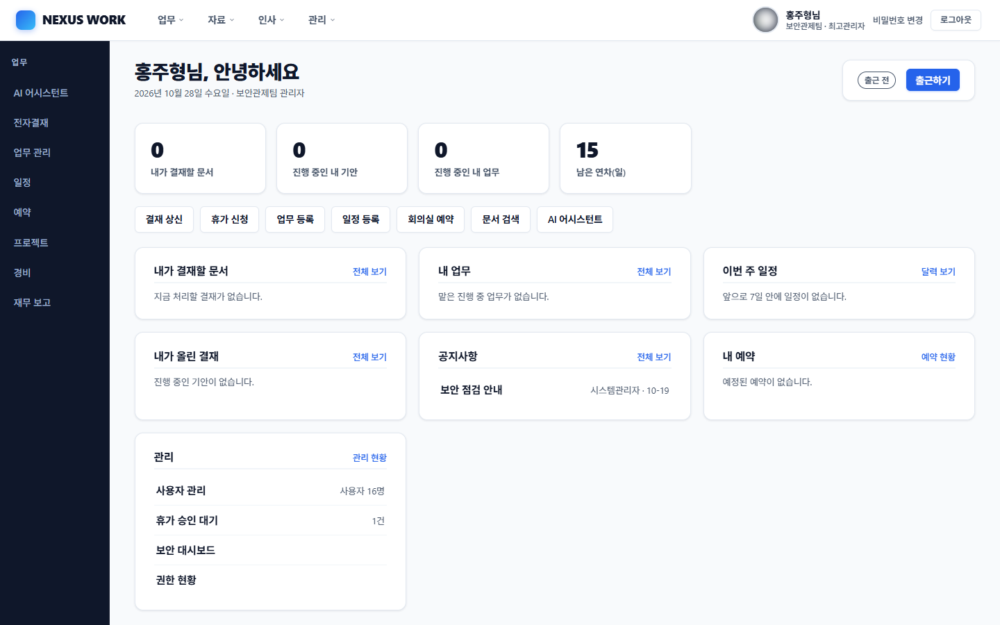
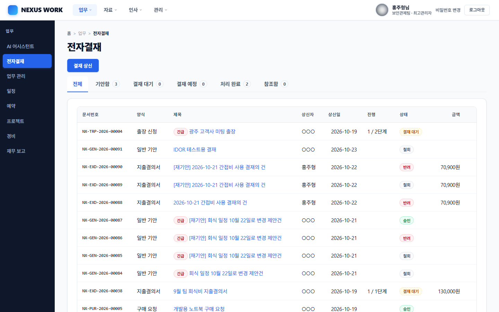
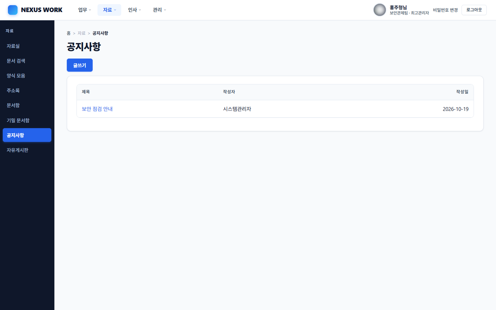
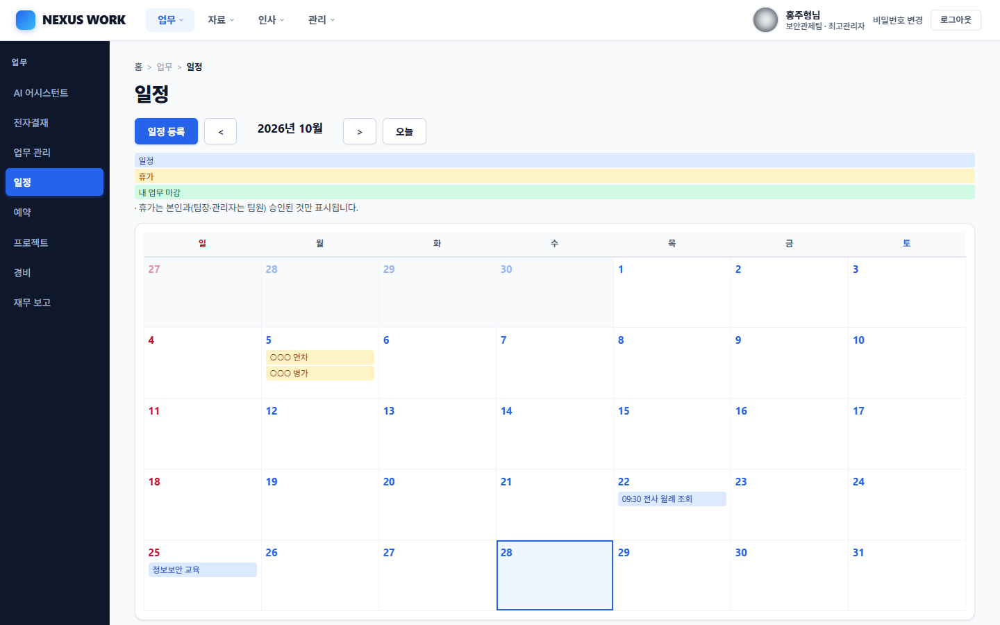
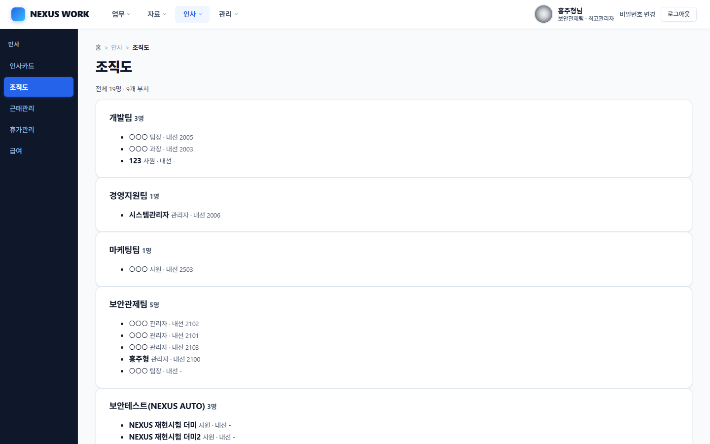
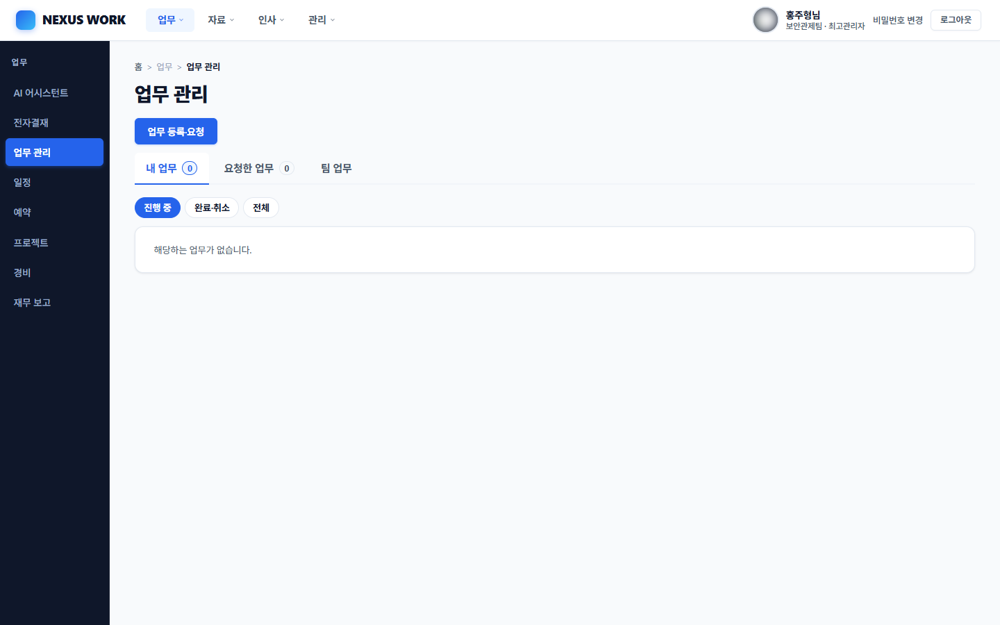
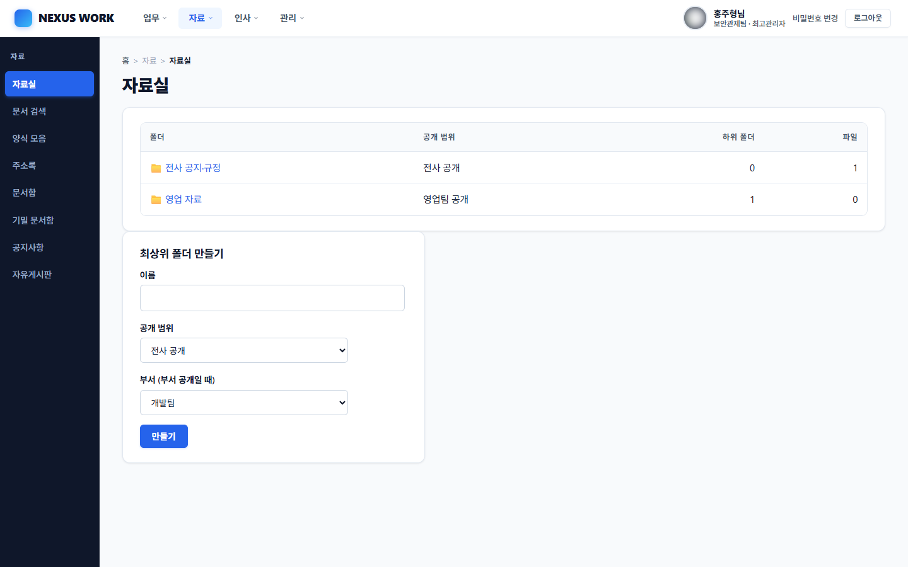
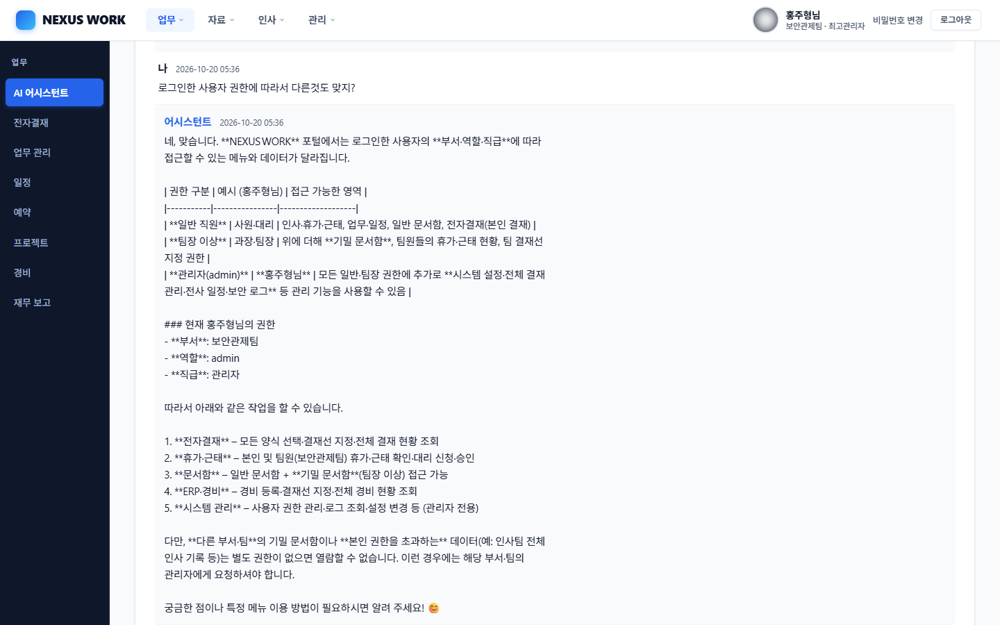
3. 방어 설계하드닝의 핵심
| 쿼리 | 모든 SQL은 상수 문자열 + 파라미터 바인딩. AST 정적 검사가 테스트로 강제합니다. |
|---|---|
| 인증·세션 | Argon2id, 5회 실패 시 15분 잠금, 동일한 실패 메시지(계정 열거 방지), 세션 재발급, 로그아웃·비밀번호 변경 시 이전 쿠키 전부 무효화 |
| 인가 | 역할·소유자·팀 범위를 서버에서 검사하고, 사용자·역할·잠금은 요청마다 DB에서 다시 읽어 즉시 반영 |
| 출력 | 자동 이스케이프, CSP(인라인 스크립트 불가), nosniff, X-Frame-Options |
| DB 권한 | 일반 표는 nexus_app, 기밀 표는 nexus_conf(읽기 전용), 자동화는 nexus_n8n로 분리 |
| 로그 | 표준 필드의 JSON 한 줄(security.jsonl). 비밀번호·토큰·대화 내용은 기록하지 않음 |
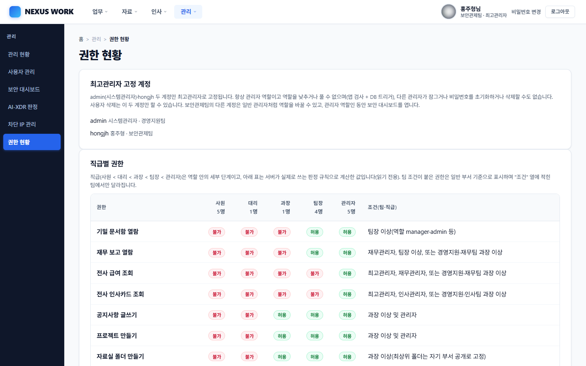
4. 보안 관제 · AI-XDR탐지에서 대응까지
룰셋(R1~R12)이 1차로 거른 이벤트를 AI가 주기적으로 판정하고, 정책 게이트가 시간대와 신뢰도에 따라 반자동(승인형) 또는 자동 대응을 결정합니다. AI 판정만으로 IP를 차단하지 않고, 허용된 정책과 관리자 결정이 있어야 집행합니다.
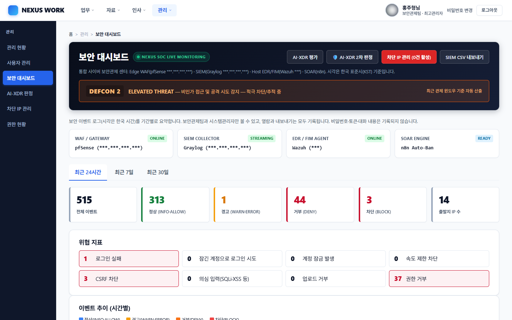
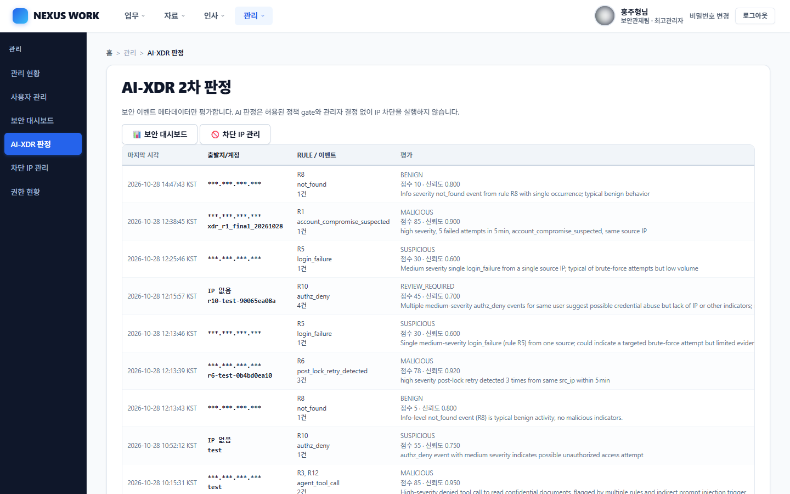
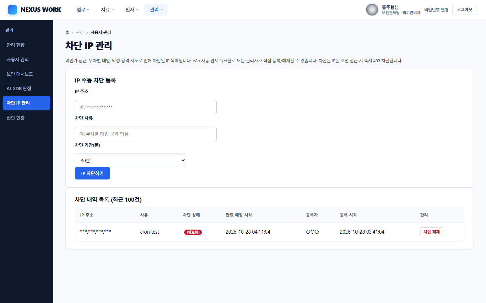
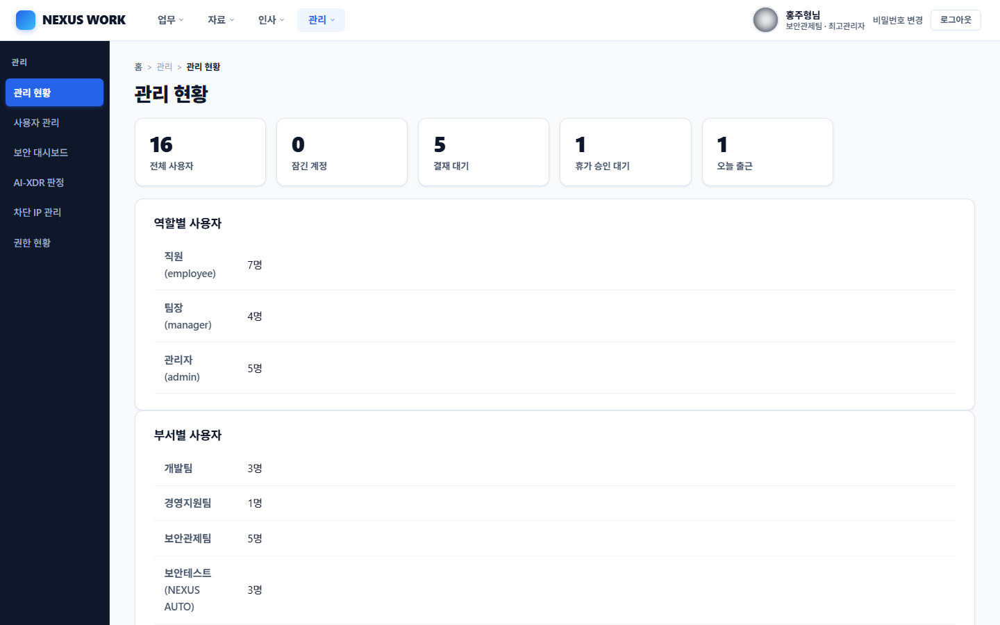
이번에 해결한 문제: /ai-xdr/process가 항상 processed=0
- 증상 — 이벤트 수신(202)은 정상인데 판정 처리 건수가 계속 0.
- 원인 — 이벤트가 가리키는 티켓이 이 서버 DB에 없어서 외래키 위반이 발생했고,
INSERT IGNORE가 이를 조용히 삼켰습니다. 에러 로그도 남지 않았습니다. - 해결 — 존재하는 티켓만 연결하고, 외부 티켓 ID는 payload에 보존해 화면에 표시. 처리 단계별 진단 로그(
xdr_process_debug)를 추가했습니다. - 배운 점 — 조용히 실패하는 SQL 옵션(
IGNORE)은 영향 행 수를 반드시 확인해야 합니다.
5. NEXUS Messenger네이티브 데스크톱 앱 (Flutter)
포털과 같은 계정으로 로그인하는 사내 메신저입니다. 쿠키 대신 SHA-256 해시로 저장되는 토큰을 쓰고, 1:1·그룹 채팅, 파일 전송, 대화창 흔들기, 조직도 연동, 실시간 전송(Socket.IO)을 지원합니다.

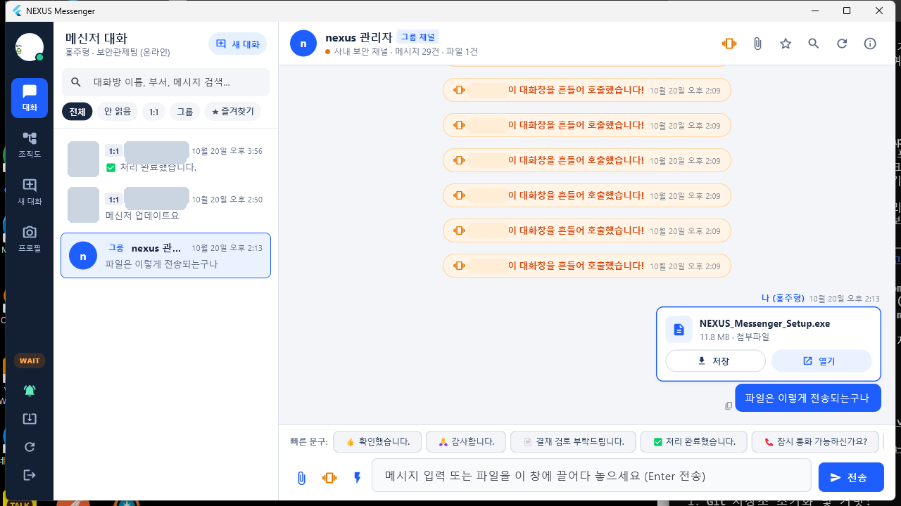
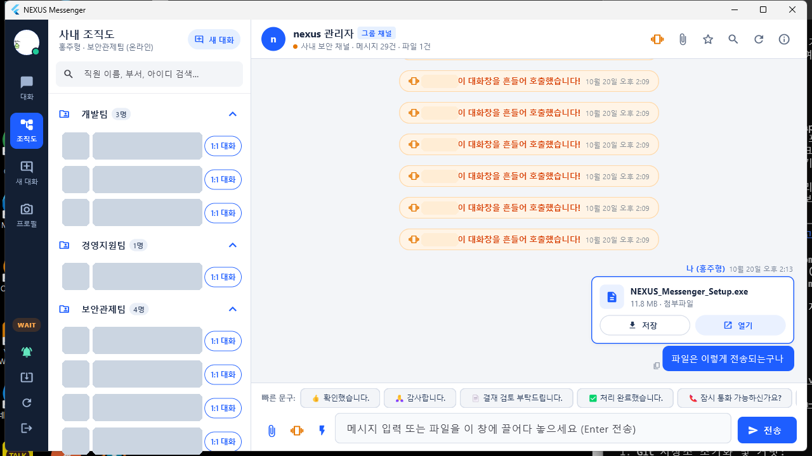
| 인증 | 웹과 같은 authenticate() 재사용(잠금·열거 방지·속도 제한 공유). 토큰 30일 만료, 로그아웃 시 즉시 폐기 |
|---|---|
| CSRF | 쿠키를 쓰지 않으므로 /api/v1/*는 CSRF 대상에서 제외하는 것이 구조상 안전 |
| 업데이트 | 설치 파일 검증(update_verifier)을 거쳐 배포 |
6. 사용 기술
| 백엔드 | Python, Flask, Flask-SocketIO, Argon2, PyMySQL |
|---|---|
| DB | MySQL 8.4 (Docker), 최소권한 계정, 트리거로 결재 불변 규칙 강제 |
| 보안 연동 | pfSense(HAProxy/WAF), Wazuh, Graylog, n8n, Groq/Ollama |
| 클라이언트 | Flutter (Windows 데스크톱) |
| 검증 | pytest, 방어 점검 스크립트 18항목, 추가 공격 패턴 20항목, nmap·nikto·gobuster·sqlmap·hydra |
7. 팀 협업
- 보안 관제(Wazuh·Graylog·n8n), 네트워크(pfSense), 시스템 관리 담당과 역할을 나눠 협업했습니다.
- GitHub PR 기반으로 병합하고, 포털 API(
/internal/api/v1/*) 계약을 문서로 공유해 n8n 워크플로와 맞췄습니다. - 운영 DB 변경은 마이그레이션 스크립트를 먼저 dry-run으로 확인하고, 적용 전에 백업을 받은 뒤 반영했습니다.
8. 앞으로 개선할 점
- 포털 HTTPS 전환(앞단 HAProxy에서 TLS 종료, 쿠키 Secure 적용)
- AI-XDR 승인 경로의 실제 차단(live 모드) 정책 확정
- 의존성 취약점 점검과 부하 검증
모든 데이터는 실습용 가상 데이터입니다. 화면 캡처는 실행 중인 로컬 환경에서 촬영했고, 직원 이름·IP 주소·호스트명은 가렸습니다.